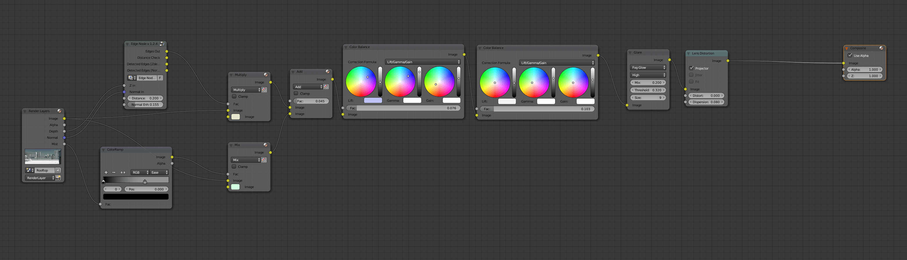

Per quanto riguarda la modellazione la città è stata realizzata partendo da una serie di otto edifici ripetuti e ruotati in diverse direzioni, oltre ad un semplice marciapiede modulare ed estendibile. Il robot è stato realizzato attraverso le tecniche di subdivision surface per facilitare la scalabilità del dettaglio in base alla scena. Il ragazzo è stato realizzato con l’ausilio dello smooth shading e le custom split normals per determinare gli hard-edges della mesh.
La scelta di un’estetica cartoonesca è stata guidata dalla maggiore rapidità di modellazione degli asset ma anche alle maggiori possibilità espressive permesse.
LO SHADING
In termini di shading è stato scelto il toon shader di Cycles, con i seguenti valori:
mentre per le superfici luminose sono stati utilizzati degli emission shader con valori di intensità da 0.5 a 3.
Nella scena delle scale e del vicolo all’inizio si è deciso di compensare anche attraverso l’utilizzo di plane lights per aumentare la visibilità complessiva della scena.
La città è stata illuminata da una sun light con una dimensione relativamente bassa. Questo ha permesso di avere ombre nette, adatte alla stilizzazione scelta.
LE TEXTURE
Non sono state utilizzate particolari texture, infatti si è deciso di lasciare spazio alle possibilità espressive esclusive dello shader. Le uniche texture utilizzate sono quelle dei condizionatori d’aria degli edifici, il messaggio di evacuazione, il terminale e i dettagli delle placche del robot.
POST-PROCESSING

Fulcro dell’aspetto visivo di Alpha sunshine è stato il post-processing. Gli effetti applicati sono i seguenti:
MIST
Il colore delle mesh sullo sfondo viene gradualmente filtrato. Questo effetto contribuisce ad aumentare il senso di un’atmosfera pesante e di un ambiente desolato, nonché ad appiattire lo sfondo per far risaltare l’azione in primo piano.
EDGE NODE
Sostituto più efficiente del freestyle di blender, questo effetto scontorna le mesh con delle linee. Oltre a migliorare l’estetica dei modelli, contribuisce a dare maggiore definizione agli stessi.
COLOR BALANCE
Una correzione colore per dare maggiore omogeneità all’immagine.
GLARE
Fulcro centrale dello stile di Alpha Sunshine, il bagliore generato dalle superfici chiare vuole risaltare l’intensità del sole e dare dunque l’idea di una giornata di sole molto intenso.
LENS DISTORTION
L’aberrazione cromatica simula i difetti degli obiettivi fotografici e cinematografici
Le scene sono state pensate con uno screen ratio di 1:2,35 per effetto estetico e cinematografico.